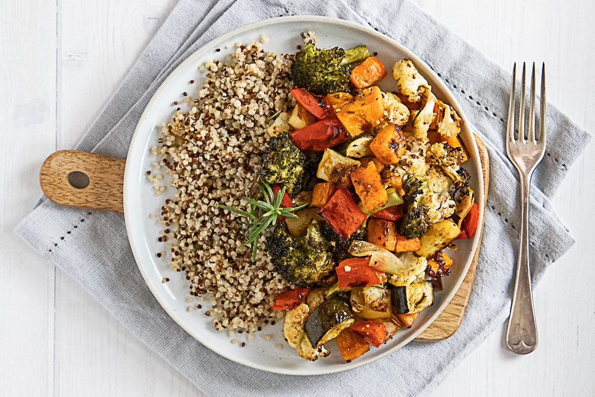

Vegan Dinner Recipes
Vegan Gumbo

Ingredients:
- 1 cup okra, sliced
- 1 can diced tomatoes
- 1 can kidney beans, drained and rinsed
- 1 can black beans, drained and rinsed
- 1 bell pepper, chopped
- 1 onion, chopped
- 2 celery stalks, chopped
- 3 garlic cloves, minced
- 4 cups vegetable broth
- 2 tablespoons olive oil
- 2 tablespoons flour
- 2 tablespoons soy sauce
- 1 teaspoon thyme
- 1 teaspoon paprika
- 1/2 teaspoon cayenne pepper
- Salt and pepper to taste
- Cooked rice for serving
Procedure:
- In a large pot, heat olive oil over medium heat.
- Add flour and cook, stirring constantly, until it turns golden brown to make a roux.
- Add chopped onion, bell pepper, celery, and minced garlic. Sauté until softened.
- Add sliced okra and cook for another 5 minutes.
- Stir in diced tomatoes, kidney beans, black beans, soy sauce, thyme, paprika, cayenne pepper, salt, and pepper.
- Pour in vegetable broth and bring to a boil.
- Reduce heat and simmer for 30 minutes.
- Serve hot over cooked rice.
Quinoa Salad with Roasted Vegetables

Ingredients:
- 1 cup quinoa, rinsed
- 2 cups water or vegetable broth
- 1 cup cherry tomatoes, halved
- 1 red bell pepper, diced
- 1 yellow bell pepper, diced
- 1 zucchini, sliced
- 1 red onion, chopped
- 2 tablespoons olive oil
- 1 teaspoon dried oregano
- Salt and pepper to taste
- 1/4 cup fresh parsley, chopped
- 1/4 cup tahini
- 2 tablespoons lemon juice
- 2 cloves garlic, minced
- Water to thin
Procedure:
- Preheat oven to 400°F (200°C).
- Cook quinoa in water or vegetable broth according to package instructions. Set aside to cool.
- Place cherry tomatoes, bell peppers, zucchini, and red onion on a baking sheet. Drizzle with olive oil, sprinkle with oregano, salt, and pepper. Toss to coat.
- Roast vegetables in preheated oven for 20-25 minutes, or until tender and slightly charred.
- In a small bowl, whisk together tahini, lemon juice, minced garlic, and enough water to thin the dressing to desired consistency.
- In a large bowl, combine cooked quinoa, roasted vegetables, and fresh parsley.
- Drizzle with tahini dressing and toss to combine.
- Season with additional salt and pepper to taste, if needed.
- Serve immediately or chill in the refrigerator for later.
Vegan Sweet Potato Casserole

Ingredients:
- 4 large sweet potatoes, peeled and cubed
- 1/2 cup almond milk
- 1/4 cup maple syrup
- 1 teaspoon cinnamon
- 1/2 teaspoon nutmeg
- 1/2 teaspoon salt
- 1 cup chopped pecans
- 2 tablespoons coconut oil
Procedure:
- Preheat oven to 375°F (190°C).
- Boil sweet potatoes until tender. Drain and mash with almond milk, maple syrup, cinnamon, nutmeg, and salt.
- Transfer to a baking dish.
- In a small bowl, mix chopped pecans and coconut oil.
- Sprinkle pecan mixture over the sweet potatoes.
- Bake for 20-25 minutes until topping is golden brown.
- Serve warm.
Vegan Moussaka

Ingredients:
- 2 large eggplants, sliced
- 1 cup lentils, cooked
- 1 onion, chopped
- 2 garlic cloves, minced
- 2 cups tomato sauce
- 1 teaspoon cinnamon
- 1 teaspoon oregano
- 1/2 teaspoon nutmeg
- 2 tablespoons olive oil
- Salt and pepper to taste
- 1 cup vegan béchamel sauce (store-bought or homemade)
Procedure:
- Preheat oven to 375°F (190°C).
- Brush eggplant slices with olive oil and bake until tender.
- In a pan, heat olive oil over medium heat. Add chopped onion and minced garlic. Sauté until softened.
- Add cooked lentils, tomato sauce, cinnamon, oregano, nutmeg, salt, and pepper. Simmer for 10 minutes.
- In a baking dish, layer eggplant slices and lentil mixture.
- Top with vegan béchamel sauce.
- Bake for 30-35 minutes until golden brown.
- Let cool slightly before serving.
Vegan Risotto

Ingredients:
- 1 cup arborio rice
- 1 onion, chopped
- 2 garlic cloves, minced
- 4 cups vegetable broth
- 1/2 cup white wine
- 1 cup mushrooms, sliced
- 1 cup peas
- 2 tablespoons olive oil
- 1/4 cup nutritional yeast
- Salt and pepper to taste
Procedure:
- Heat vegetable broth in a pot and keep it warm.
- In a large pan, heat olive oil over medium heat. Add chopped onion and minced garlic. Sauté until softened.
- Add arborio rice and cook, stirring, until lightly toasted.
- Add white wine and cook until absorbed.
- Gradually add warm vegetable broth, one ladle at a time, stirring constantly until absorbed before adding more.
- When rice is nearly cooked, add mushrooms and peas. Continue cooking until rice is creamy and tender.
- Stir in nutritional yeast, salt, and pepper.
- Serve hot.
Vegan Tacos

Ingredients:
- 8 small tortillas
- 1 can black beans, drained and rinsed
- 1 cup corn
- 1 avocado, sliced
- 1 cup salsa
- 1 bell pepper, chopped
- 1 onion, chopped
- 2 garlic cloves, minced
- 2 tablespoons olive oil
- 1 teaspoon cumin
- 1 teaspoon chili powder
- Salt and pepper to taste
Procedure:
- Heat olive oil in a pan over medium heat.
- Add chopped onion, bell pepper, and minced garlic. Sauté until softened.
- Add black beans, corn, cumin, chili powder, salt, and pepper. Cook for 5-7 minutes.
- Warm tortillas in a dry pan or microwave.
- Fill each tortilla with the bean mixture, avocado slices, and salsa.
- Serve warm.
Non-Vegan Dinner Recipes
Pork Tenderloin

Ingredients:
- 1 pork tenderloin
- 2 tablespoons olive oil
- 2 garlic cloves, minced
- 1 tablespoon rosemary, chopped
- 1 tablespoon thyme, chopped
- Salt and pepper to taste
Procedure:
- Preheat oven to 400°F (200°C).
- In a small bowl, mix olive oil, minced garlic, chopped rosemary, chopped thyme, salt, and pepper.
- Rub the mixture all over the pork tenderloin.
- Place tenderloin on a baking sheet.
- Roast for 25-30 minutes until internal temperature reaches 145°F (63°C).
- Let rest for 5-10 minutes before slicing.
- Serve with roasted vegetables.
Lamb Chops

Ingredients:
- 8 lamb chops
- 2 tablespoons olive oil
- 2 garlic cloves, minced
- 1 tablespoon rosemary, chopped
- Salt and pepper to taste
Procedure:
- Preheat oven to 375°F (190°C).
- In a small bowl, mix olive oil, minced garlic, chopped rosemary, salt, and pepper.
- Rub the mixture all over the lamb chops.
- Heat a large pan over medium-high heat.
- Sear lamb chops for 2-3 minutes on each side until browned.
- Transfer to a baking sheet and bake for 10-15 minutes until desired doneness.
- Serve hot with mashed potatoes.
Chicken Marsala

Ingredients:
- 4 chicken breasts, pounded thin
- 1/2 cup flour
- 1/4 cup butter
- 1/4 cup olive oil
- 1 cup mushrooms, sliced
- 1 cup Marsala wine
- 1 cup chicken broth
- Salt and pepper to taste
Procedure:
- Dredge chicken breasts in flour, shaking off excess.
- Heat olive oil and butter in a large pan over medium heat.
- Cook chicken breasts until golden brown on both sides. Remove and set aside.
- In the same pan, add mushrooms and cook until softened.
- Add Marsala wine and chicken broth. Bring to a boil, then reduce heat and simmer for 10 minutes.
- Return chicken to the pan and cook for another 10 minutes.
- Serve hot with pasta or rice.
Beef Wellington

Ingredients:
- 1 beef tenderloin
- 1/2 cup mushrooms, finely chopped
- 2 tablespoons butter
- 2 tablespoons Dijon mustard
- 1 package puff pastry
- 1 egg, beaten
- Salt and pepper to taste
Procedure:
- Preheat oven to 400°F (200°C).
- Season beef tenderloin with salt and pepper.
- In a pan, melt butter over medium heat. Add mushrooms and cook until softened.
- Spread Dijon mustard over the beef tenderloin.
- Roll out puff pastry and place beef in the center. Spread mushrooms over the beef.
- Wrap puff pastry around the beef, sealing edges with beaten egg.
- Place on a baking sheet and brush with beaten egg.
- Bake for 25-30 minutes until golden brown.
- Let rest for 10 minutes before slicing and serving.
Lobster Tail

Ingredients:
- 4 lobster tails
- 1/4 cup butter, melted
- 2 garlic cloves, minced
- 1 lemon, cut into wedges
- Salt and pepper to taste
Procedure:
- Preheat oven to 425°F (220°C).
- Using kitchen shears, cut the top shell of each lobster tail lengthwise.
- Pull the meat out and place it on top of the shell.
- In a small bowl, mix melted butter and minced garlic.
- Brush lobster meat with the butter mixture.
- Place lobster tails on a baking sheet.
- Bake for 12-15 minutes until meat is opaque.
- Serve hot with lemon wedges.
Duck à l'Orange

Ingredients:
- 1 whole duck
- 1 cup orange juice
- 1/2 cup chicken broth
- 1/4 cup sugar
- 1/4 cup red wine vinegar
- 2 tablespoons orange zest
- Salt and pepper to taste
Procedure:
- Preheat oven to 375°F (190°C).
- Season duck with salt and pepper. Place in a roasting pan.
- Roast for 1 1/2 to 2 hours until internal temperature reaches 165°F (74°C).
- In a small saucepan, combine orange juice, chicken broth, sugar, red wine vinegar, and orange zest.
- Bring to a boil, then reduce heat and simmer until sauce thickens.
- Serve duck with orange sauce drizzled on top.